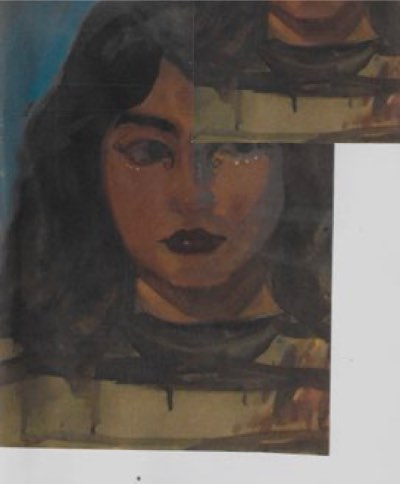
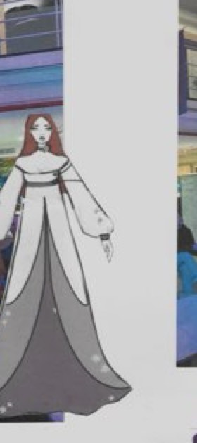
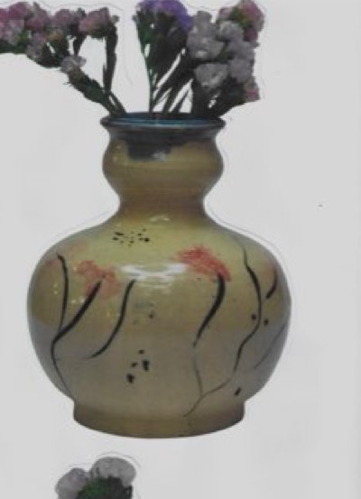

ART
ART CERAMICS
CERAMICS FASHION
FASHIONDo you remember the mirror that warped my face?
WRITINGH1 · Doors first: four doors fill the screen; scrolling down reaches the mixed pile
Ona



Do you remember the morning that smelled of smoke?
H2 · The pile is home: cut-out work floats on white; the four disciplines stay pinned like doors and filter the pile (click them)
ART
 CERAMICS
CERAMICS FASHION
FASHION WRITING
WRITING
H3 · Doors, then a tidy grid: scroll inside the frame; neater and calmer than the pile